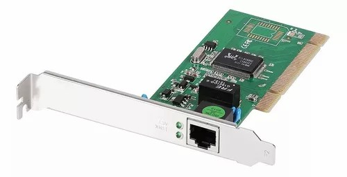
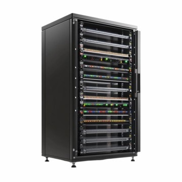
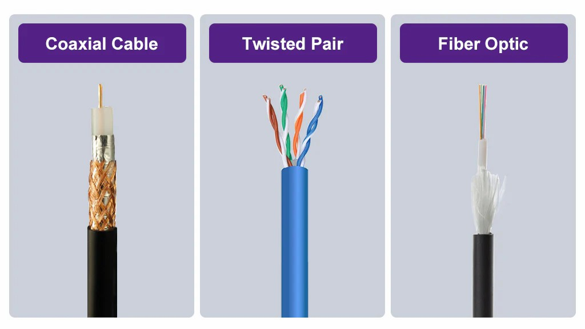

Aprenda Redes
Tudo sobre Redes Parte 11
Camada de Link de Dados do Modelo OSI
A camada de link de dados, ou enlace (modelo OSI, camada 2) tem por função principal fornecer transferência de dados nó a nó, ou seja, realizar a ligação entre dois nós conectados em rede. Responde a requisições de serviço da camada de rede e emite requisições de serviço para a camada física. Corresponde à camada de interface de rede/física na pilha TCP/IP.
Podemos descrever as camadas que compões a pilha TCP/IP em termos do modelo OSI. A camada de internet TCP/IP é, na verdade, um subconjunto da camada de acesso à rede (física) do modelo OSI.
| TCP/IP | Referente ao Modelo OSI |
|---|---|
| Aplicação | Aplicação |
| Apresentação | |
| Sessão | |
| Transporte | Transporte |
| Rede (Internet) | Rede |
| Física | Enlace |
| Física |
Essas são as funções da camada de link de dados:
- Realiza endereçamento físico de dispositivos de rede.
- Detecta e tenta corrigir erros que possam ocorrer na camada física.
- Define protocolo para controle de fluxo entre os nós.
- Sinalização de início e fim de transmissão de quadros.
- Gera um código para reconhecimento de erros de transmissão de dados (checksum).
A camada de link de dados é dividida em duas subcamadas pelo padrão IEEE 802:
- MAC - Medium Access Control (controle de acesso ao meio). Controle como os dispositivos na rede obtém acesso a um meio de transmissão, com permissão para trasmitir dados.
- LLC - Logical Link Control. Identifica e encapsula protocolos de camada de rede, e controla verificação de erros e sincronismo de quadros.
Sobre o endereçamento físico (MAC address):
- O endereço MAC é responsável pela identificação única dos dispositivos em uma rede, consistindo em um endereço de 48 bits gravado em uma ROM presente na interface física de rede.
- MACs são atribuídos às NICs pelo fabricantes, e permitem identificar o fabricante da placa por meio de um número de identificação registrado.
- Exemplo de endereço MAC:
30-e4-db-9f-a3-48.
Veja uma NIC (placa de rede) logo abaixo:
Sobre o quadro (frame):
- O PDU na camada 2 é chamado de quadro (tamanho configurável) ou ainda célula (tamanho fixo).
- Caso o pacote de dados recebido da camada de rede for maior que o tamanho do quadro em uso na rede, ele será dividido em tantos quadros quantos necessários para transmitir o pacote na íntegra.
Veja como funciona os quadros (frames):

Estrutura de um quadro ethernet (frame):
| Preâmbulo 7 bytes |
SFD 1 byte |
MAC Destino 6 bytes |
MAC Origem 6 bytes |
Comprimento 2 bytes |
Dados e Pad 46 a 1500 bytes |
FCS 4 bytes |
Sobre essa estrutura:
- Preâmbulo - Marca o início do quadro. São sete bytes 10101010. Com o SFD forma um padrão de sincronismo: Ao encontrar sete bytes 10101010 e um byte 10101011, o dispositivo receptor sabe estar diante do início de um quadro.
- SFD (Start of Frame Delimiter) - É um quadro 10101011.
- MAC de Destino - Endereço MAC da placa de rede de destino.
- MAC de Origem - Endereço MAC da placa de rede de origem.
- Comprimento - Nº de bytes transmitidos no campo de dados do quadro.
- Dados - Dados enviados pela camada LLC.
- Pad - Se o campo de dados tiver menos de 46 bytes, são inseridos zeros para completar os 46 bytes.
- FCS (Frame Check Sequence) - Controle de correção de dados.
Alguns dos dispositivos que operam na camada de enlace do modelo OSI incluem switches, access points, NICs e bridges.
A imagem a seguir lista alguns dos protocolos da camada de enlace mais comuns (Modelo TCP/IP):

Camada Física do Modelo OSI
Como lembrando, o modelo OSI é composto por sete camadas (numeradas de 1 a 7, de baixo pra cima):
| Camada de Aplicação |
| Camada de Apresentação |
| Camada de Sessão |
| Camada de Transporte |
| Camada de Rede |
| Camada de Link de Dados |
| Camada Física |
A camada física (modelo OSI, camada 1) tem por função principal a transmissão e recepção de dados digitais (bits) entre um dispositivo e um meio de transmissão físico. Responde a requisições de serviço da camada de enlace e emite/recebe sinais de e para o meio físico. Corresponde à camada física na pilha TCP/IP.
Podemos descrever as camadas que compõe a pilha TCP/IP em termos do modelo OSI. Veja abaixo:
| TCP/IP | Referente ao Modelo OSI |
|---|---|
| Aplicação | Aplicação |
| Apresentação | |
| Sessão | |
| Transporte | Transporte |
| Rede (Internet) | Rede |
| Física | Enlace |
| Física |
A transmissão de dados é feita de camada para camada, e os dados de aplicação da máquina A é passado por todas as camadas, passa pelo caminho de comunicação e passa por todas as camadas da máquina B até chegar na camada de aplicação dela, como visto na imagem abaixo:

Os meios de transmissão são o meio físico para a propagação de sinais de telecomunicações, os tipos principais são: Cabos metálicos, coaxial, par trançado, fibras ópticas e ondas de rádio.
Essas são as funções da camada física:
- Entrega bit-a-bit ou símbolo-a-símbolo.
- Especificação mecânica de conectores elétricos e cabos.
- Especificação elétrica de níveis de sinal de linhas de transmissão e impedância.
- Interfaces de rádio, alocação de frequências do espectro eletromagnético.
- Modulação de multiplexação de sinais.
- Comutação de circuitos.
- Controle de fluxo e sinalização start-stop.
- Não inclui o meio onde os dados trafegam.
Sobre a codificação de sinais:
- Os níveis lógicos que representam bits são codificados em sinais elétricos ou eletromagnéticos para transmissão por um meio.
- Essa conversão é feita por meio da codificação dos sinais.
- Existem diversos sistemas de codificação, como Manchester, 4B/5B, MLT-3, 4D-PAM-5, etc.
Alguns dos dispositivos que operam na camada física do modelo OSI incluem: Placas de rede (NIC), modems, hubs, repetidores e conversores de fibra.
A imagem a seguir lista alguns dos protocolos da camada física mais comuns (modelo TCP-IP):

Resumindo:
- Trata da sinalização de rede, e conversão de bits digitais em sinais elétricos, ópticos ou ondas eletromagnéticas para envio por meio de transmissão utilizados, carregando os dados de um ponto a outro da rede.
- Define aspectos mecânicos e elétricos da rede. Especifica níveis de tensão, taxas de transmissão, distâncias máximas, esquemas de modulação, frequência de dispositivos wireless e tipos de conectores físicos, entre outros.
- Nesta camada temos cabos, conectores, antenas, hubs, modems e placas de rede atuando. Define especificações de modos de transmissão: Simplex, half duplex e full duplex.
Cabeamento Estruturado
Cabeamento estruturado é o conjunto que envolve componentes e arquitetura de cabeamento de dados para comunicações, especificado por normas e padrões, e adotado de forma voluntária pelos fabricantes e empresas. Assim, podemos construir uma infraestrutura de cabeamento de telecomunicações (telefonia e dados) que consista em elementos padronizados, ou seja, uma rede estruturada de dados. Podemos dizer que um cabeamento estruturado é uma infraestrutura de cabeamento bem organizada.
Uma infraestrutura de cabeamento estruturada bem planejada e instalada fornece uma série de benefícios, tais como:
- Performance melhorada e previsível.
- Flexibilidade para acomodar alterações de layout, quantidade e tipo de dispositivos, de forma rápida e controlada.
- Fornece redundância.
- Aumento da disponibilidade da rede e elementos associados, como o Data Center.
- Diminui o tempo necessário para encontrar problemas de conectividade.
- Simplifica a instalação e a manutenção da infraestrutura de comunicações, principalmente quando a quantidade de equipamentos for grande, além de tornar flexível sua alteração e atualização.
- Permite que sejam usados equipamentos de diferentes fabricantes com total interoperabilidade.
- Com uma rede estruturada, é possível compartilhar os caminhos de dados com outros tipos de transmissão, como telefonia, vídeo, som ambiente, sensores e alarmes, etc.
Um sistema de cabeamento estruturado é instalado em sistemas de piso ou sistemas aéreos de canaletas e dutos (aparentes ou embutidos). Deve seguir requisitos mínimos relacionados a distâncias, arquitetura de interligação, padrões de pinagem e transmissão e interconectividade.
Um sistema de cabeamento estruturado completo é composto por seis subsistemas:
- Entrada de facilidades.
- Sala de equipamentos.
- Cabeamento backbone (vertical).
- Cabeamento horizontal.
- Salas de telecomunicações.
- Área de trabalho.
A entrada de facilidades é o espaço reservado para receber os cabos de entrada das operadores de serviço (telefonia, TV a cabo, etc.) e outros serviços externos, onde estes serão conectados à rede interna. Inclui hardware de conexão e equipamentos de proteção.
A sala de equipamentos é o espaço dentro do edifício que acomoda terminações e equipamentos de telecomunicações. É onde são feitas as conexões entre os cabeamentos que vão para a sala de telecomunicações. Inclui main, intermediate e horizontal cross-connects.
O cabeamento vertical interliga as salas de telecomunicações instaladas nos andares de um edifício comercial, ou vários edifícios a uma sala de equipamentos. Também chamado de cabeamento primário. Pode empregar cabeamento metálico de par trançado ou fibra óptica.
A sala de telecomunicações é o espaço reservado que contém o ponto de transição entre o cabeamento vertical e o cabeamento horizontal, podendo abrigar equipamentos ativos como switches e também patch panels. Pode ser uma armário de telecomunicações em vez de uma sala, dependendo do tamanho da estrutura.
A área de trabalho é a área interna que possui pontos de telecomunicação e energia elétrica para a conexão dos equipamentos dos usuários. Cada área de trabalho deve possuir duas tomadas de conexão (telecomunicações).
Um sistema de cabeamento estruturado é constituído de um conjunto de elementos que podem incluir: Cabos metálicos e de fibra óptica, patch panels, dutos, painéis e tomadas, racks, cabos e patch cords, conectores, etc.
Veja a imagem de um rack de equipamentos:
O que são Meios de Transmissão
Como lembramos, o dados são transmitidos de tal forma no modelo OSI:
O meio de transmissão é o meio físico para a propagação de sinais de telecomunicações. Trata-se do caminho físico por onde trafegam informações, entre um transmissor e um receptor. Canal de comunicações por meio do qual os dados são enviados de um lugar a outro. Os meios de transmissão podem ser classificados em vários tipos, dependendo da natureza do meio físico empregado.
Basicamente, existem dois meios de transmissão:
- Guiados: Com cabos (meio sólido), como coaxial, par trançado e fibra óptica.
- Não-Guiados: Sem fios, como rádio, IR e microondas.
Abaixo veremos alguns dos meios guiados:
O cabo coaxial consiste em dois fios condutores, sendo um o condutor dos sinais e o outro uma malha de blindagem que o rodeia, isolada. Esse conjunto é inserido dentro de uma capa isolante. O cabo coaxial mais comum, de nome 10Base2, usa um conector do tipo BNC. Esse tipo de cabo possui impedância (Z), medida em ohms (Ω). Trata-se da soma de três grandezas: Resistência elétrica, reatância capacitiva e reatância indutiva. A impedância influencia na reflexão de sinais entre dois dispositivos conectados. Para redes locais, seu valor padrão é de 50 Ω.
As vantagens do cabo coaxial são:
- Por ser blindado, pode ser mais longo que cabos de par trançado comuns.
- Pode transmitir sinais de alta largura de banda.
- Possui boa imunidade a ruídos eletromagnéticos.
- Seu custo de instalação é baixo.
Já as desvantagens:
- Se quebra e apresenta mau contato com relativa frequência, por não ser flexível.
- Normalmente empregado em topologia barramento, que traz dificuldade de expansão e manutenção da rede.
- Necessita de terminador de impedância.
- Devido a sua espessura, é difícil passar esse tipo de cabo por canaletas e dutos.
- Se o cabo se rompe, pode interromper toda a rede.
O cabo de par trançado possui 4 pares de fios isolados, no qual cada par consiste em dois fios enrolados um ao redor do outro para evitar interferência mútua e diafonia (daí o nome "par trançado"). Existem dois tipos principais: UTP (sem blindagem) e STP (com blindagem).
A fibra óptica é um fio fino e leve, transparente, usado para transmitir dados por meio de pulsos de luz (laser/LED). Evita interferência eletromagnética sem a necessidade de blindagens metálicas. O sinal é menos atenuado, e assim é possível usar cabos muito mais longos. As fibras ópticas atingem altas taxas de transferência de dados.
As fibras ópticas encontram inúmeras aplicações atualmente, entre elas:
- Redes de backbone.
- Conexão de banda larga de alta velocidade à internet.
- Conexão de alta velocidade entre servidores e SAN.
- Cabos submarinos.
- Aplicações militares e sensoriamento remoto.
Existem algumas desvantagens no uso de fibras ópticas em redes de dados, como:
- Instalação e manutenção são difíceis.
- Seu custo é bem maior em comparação com cabos metálicos.
- Trata-se de um meio frágil, que pode se romper com certa facilidade.
- Necessita de hardware de conexão e transmissão especial.
- Unidirecional, necessita duas fibras para TX e RX.
Veja como são os tipos de cabos descritos:
Agora veremos os meios de transmissão não-guiados:
As transmissões wireless são tecnologias que permitem a transmissão de dados sem o uso de fios, por meio não-guiado. Os dados são transmitidos por meio de ondas eletromagnéticas (rádio, IR, microondas) que se propagam pelo espaço.
Existem vários padrões de redes sem fio, como:
- Wi-Fi: Redes LAN sem fio.
- Bluetooth: Comunicação entre dispositivos / Redes PAN.
- WiMAX: Internet de longo alcance sem fios.
- Satélite
- IrDA: Conexão de dados em infravermelho.
- Redes 3G/4G/5G
Essas são as vantagens das redes wireless:
- Permitem o acesso em locais remotos, onde não é possível passar cabos.
- Ampliação da rede é extremamente simples, desde que o equipamento suporte tráfego adicional.
- Novos padrões possuem taxa de transferência elevada.
E essas são as desvantagens:
- Problemas de segurança e privacidade são comuns.
- Taxa de transmissão de dados pode ser limitada em relação à meios de transmissão guiados (cabos metálicos e fibras ópticas).
- Sinais podem ser atenuados por obstáculos, como paredes, necessitando de repetidores.
As transmissões sem fio podem se dar por três tipos de meios nãp-guiados (ondas eletromagnéticas):
- Ondas de Rádio: Atinge longas distâncias e penetram em paredes. Transmissão multicast de AM e FM, TV e telefones sem fio.
- Microondas: Área de cobertura variável, dependente da antena e potência. Comunicação móvel, comunicação via satélite, redes WLAN. Usa antenas direcionais.
- Infravermelho: Curtíssimas distâncias, em uso com dispositivos alinhados. Não atravessa obstáculos. Usada em conjunto com mouses e teclados sem fio.
O Wi-Fi são redes locais que não utilizam cabos para comunicação entre os hosts. Usa um equipamento central comutador chamado de "Access Point". O AP funciona como um switch wireless. As redes Wi-Fi operam em padrões de transmissão distintos, como a, b, g, n, e ac. Código IEEE do padrão Wi-Fi é 802.11. O padrão mais atual hoje é 802.11ac.
O access point é um dispositivo de comunicação utilizado em redes wireless locais WLANs, que age como um equipamento transmissor e receptor de sinais de rádio, funcionando como uma espécie de switch sem fio. Comunica-se com uma rede cabeada, fornecendo às estações acesso à infra de rede do local, e à internet, por meio de comunicação via rádio.
Veja a imagem de um Access Point: